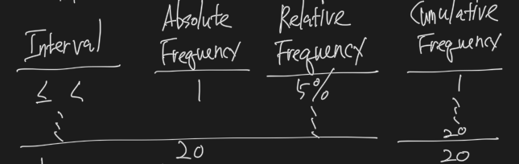

Quantitative Methods
Quantitative Methods
- 5~10% 정도 나옴
- Statistics + Finance 같은 느낌
- CFA의 core는 투자론
- expected return은 올리고, risk는 내려야 함
Describing Data Sets
Population
- 모집단
- A population is defined as the set of all possible members of a stated group.
Sample
- 표본
- A sample is defined as a subset of the population of interest.
- a sample statistics is used to measure a characteristics of a sample.
Types of Measurement Scales
Nominal scales
- Nominal scales are the level of measurement that contains the least information.
- 아무 의미 없는 번호 부여, 통계 값을 산출해도 아무 의미 없음
- ex) 키와 상관없이 무작위로 번호를 부여하면 평균을 내봐야 아무 의미가 없음
Ordinal scales
- When working with an ordinal scale, every observation is assigned to one of several categories.
- 순서가 있는 번호 부여
- ex) 키가 큰 순으로 번호를 부여한다면, 평균이 낮을 수록 키가 크다는 의미
Interval scales
- Interval scale measurements provide relative ranking like ordinal scales, plus the assurance that differences between scale values are equal.
- 크기가 상대적으로 의미를 가지나, 상대적 크기가 의미가 없음.
- ex) 섭씨 10도, 섭씨 20도는 상대적으로 20도가 10도보다 크다는 것은 알지만, 20도가 10도보다 2배 뜨겁다는 의미는 아니기 때문에 상대적 의미를 가지나, 절대적 의미가 없음
Ratio scales
- Ratio scales provide ranking and equal differences between scale values, and they also have a true zero point as the origin.
- Order, interval, and ratios all make sense with a ratio scale.
- 크기가 상대적, 절대적으로 의미를 가짐.
- ex) 10달러, 20달러는 정확히 2배 차이의 절대적 의미를 가지고, 20달러는 10달러에 비해 상대적으로 크다.
Parameter
- A measure used to describe a characteristics of a population is referred to as a parameter.
Data를 설명하는 방법
- Table - Frequency Distribution
- Graph - Histogram, Frequency Polygon
- 수치로 표현
- table, graph는 시각적으로 데이터를 왜곡되게 보여 줄 수 있음
Frequency distribution
- a tabular presentation of statistical data that aids the analysis of large data sets.
- 도수분포표
- Defining the interval
- Tally the observations and count the observations within each interval.

- Interval - 범위
- (Absolute) Frequency - 빈도
- Relative Frequency - 해당 interval의 전체 빈도 대비 비율
- Cumulative Frequency - 누적 빈도
Graph

- histogram - 막대 그래프
- frequency polygon - 꺾은 선 그래프
수치표현 방법
- Central Tendency
- mean
- (arithmetic) mean
- weighted mean
- geometric mean
- harmonic mean
- median
- mode
- mean
- Dispersion
- Skew
- Kurtosis
Central Tendency
Arithmetic Mean
- 산술평균
- sum of deviations of each observation from mean = 0
- 산술평균은 무게중심이라 편차의 합이 항상 0
- All interval and ratio data sets have an arithmetic mean.
- All data values are considered and included in the arithmetic mean computation.
- A data set has only one arithmetic mean.
- Unusually large or small values can have a disproportionate effect on the computed value for the arithmetic mean.
Weighted Mean
- 가중평균
- 값 * 비중의 평균
Median
- 중간 값
- arithmetic mean은 outlier의 영향을 너무 크게 받음. 중간 값은 영향을 덜 받음.
- The median is the midpoint of a data set when the data is arranged in ascending or descending orders.
- The median is important because the arithmetic mean can be affected by extremely large or small values (outliers). When this occurs, the median is a better measure of central tendency than the mean because it is not affected by extreme values that may actually be the result of errors in the data.

Mode
- 최빈 값
- 가장 많이 출몰한 값
- The mode is the value that occurs most frequently in a data set.
Geometric Mean Return
- Geometric Mean과 Geometric Mean Return은 technically하게는 다르다고 하는 데 별도로 설명 안 하고 Geometric Mean Return만 배움
- 기하평균수익률

- The geometric mean is often used when calculating investment returns over multiple periods or when measuring compound growth rates.
- The geometric mean return can be computed using the following equation:

Harmonic Mean
- 조화평균
- 안 가르침
Mean
- For values that are not all equal: harmonic mean < geometric mean < arithmetic mean.
Quantile
Quartiles
- the distribution is divided into quarters.
Quintile
- the distribution is divided into fifths.
Decile
- the distribution is divided into tenths.
Percentile
- the distribution is divided into hundredths (percents).
Dispersion
- 산포도
- Dispersion is defined as the variability around the central tendency.

Range
- range = max - min
Mean Absolute Deviation(MAD)
- 편차의 절대 값 평균
- The mean absolute deviation (MAD) is the average of the absolute values of the deviations of individual observations from the arithmetic mean.
Variance
- 분산
- 편차 제곱의 평균
- 표본의 분산은 분모가 n-1
- 숫자 자체로 설명이 불가능함. 다른 분산과의 크기 비교를 통해 상대적 크기를 비교하는 용도.
Standard Deviation
- 표준편차
- 분산의 제곱근
- 마찬가지로 숫자 자체로 의미가 없음
- 다만 원 데이터와 단위가 같아서 Finance에서는 risk를 standard deviation을 사용
Chebyshev’s inequality
- Chebyshev’s inequality states that for any set of observations.

Coefficient of Variance (CV)

Skewness
- 비대칭도
- A distribution is symmetrical if it is shaped identically on both sides of its mean.

- A positive skewed distribution is characterized by many outliers in the upper region, or right tail. A positively skewed distribution is said to be skewed right because of its relatively long upper (right) tail.
- A negative skewed distribution has a disproportionately large amount of outliers that fall within its lower (left) tail. A negatively skewed distribution is said to be skewed left because of its log lower tail.
Kurtosis
- 첨도

- Kurtosis is a measure of the degree to which a distribution is more or less “peaked” than a normal distribution.
Conditional and Joint Probabilities
- A random variable is an uncertain quantity / number.
- An outcome is an observed value of a random variable.
- An event is a single outcome or a set of outcomes.
- Mutually exclusive events are events that cannot both happen at the same time.
- Exhaustive events are those that include all possible outcomes.

Properties of probability
- The probability of occurrence of any event is between 0 and 1.
- If a set of events is mutually exclusive and exhaustive, the probabilities of those events sum to 1.
Exclusive, Exhaustive

Objective probabilities
- An empirical probability is established by analyzing past data.
- A priori probability is determined using a formal reasoning and inspection process.
- A subjective probability is the least formal method of developing probabilities and involves the use of personal judgment.

Conditional Probability
- 조건부 확률
- Unconditional probability refers to the probability of an event regardless of the past or future occurrence of other events.
- A conditional probability is one where the occurrence of one event affects the probability of the occurrence of another event.


Joint probability


Multiplication and additional rule of probability
- The multiplication rule of probability is used to determine the joint probability of two events.
- The additional rule of probability is used to determine the probability that as least one of two events will occur.

Calculating the probability that at least one of two events will occur

- For mutually exclusive events, where the joint probability is zero, the probability that either A or B will occur is simply the sum of the unconditional probabilities for each event.
Calculating a joint probability of any number of independent events
- When dealing with independent events, the word and indicates multiplication, and the word or indicates addition.

Independent events
- Independent events refer to events for which the occurrence of one has no influence on the occurrence of the others.

Bayes’ Formula

Expected Value

- Expected values or returns can be calculated using conditional probabilities.


Covariance / Correlation
- Finance에서 중요

Covariance
- a measure of how two assets move together.
- The covariance is a general representation of the same concept as the variance.

- The covariance may range from negative infinity to positive infinity.

Correlation coefficient
- 상관계수
- Correlation measures the strength of the linear relationship between two random variables.
- Correlation has no units.
- The correlation ranges from -1 to +1.
- If correlation is 1.0, the random variables have perfect positive correlation.
- If correlation is -1.0, the random variables have perfect negative correlation.

Spurious correlation
- correlation that is either the result of chance or present due to changes in both variables over time that is caused by their association with a third variable.